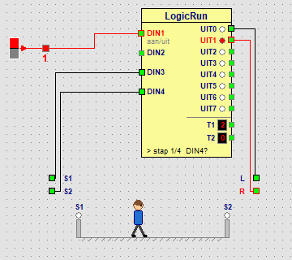

Learning path › Advanced › Lesson 16 of 17

| Step | Output | Wait for | What happens? |
|---|---|---|---|
| 1 | UIT1 | DIN4 on | The person walks to the right until S2 goes on. |
| 2 | - | - | He rests for 2 seconds (time 4 × 500 ms). |
| 3 | UIT0 | DIN3 on | He walks to the left until S1 goes on. |
| 4 | - | - | He rests for 2 seconds again; then it starts over. |
You could also say: “walk to the right for 3 seconds”. But if he walks a bit slower or does not start all the way to the left, he stops too early or bumps into the wall. A limit switch reports when the end has been reached. The program waits for it in the wait for column. A garage door, a lift or a sliding door works the same way.
Let the person rest for 5 seconds on the right and for only 1 second on the left.
The step duration is 500 ms. Set the time of step 2 to 10 (10 × 500 ms = 5 s) and that of step 4 to 2.
A lamp must be on while the person walks, and off while he rests.
Put a lamp or LED to the right of the LogicRun block and connect it to UIT2. In the LogicRun window, also click the UIT2 column of steps 1 and 3, so that output is on while the person walks.
Connect S1 to DIN4 and S2 to DIN3. What happens? Think first, then try it.
At the start the person is on the left, so S1 is already on. Step 1 waits for DIN4, which is now S1: the step is done at once and the person hardly moves. In step 3 he walks to the left and waits for S2, but that never goes on: he keeps walking against the left wall. So a machine with wrongly connected limit switches does not work properly. That is why you always test them first.